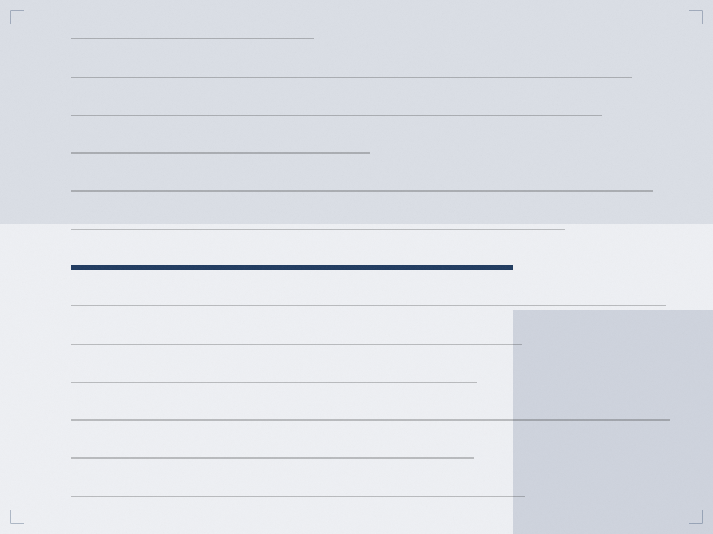
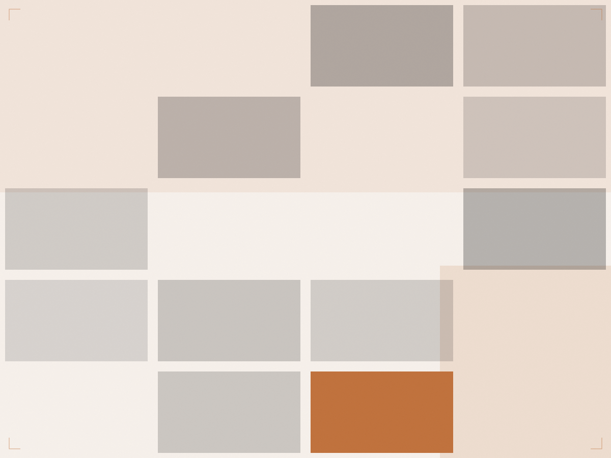
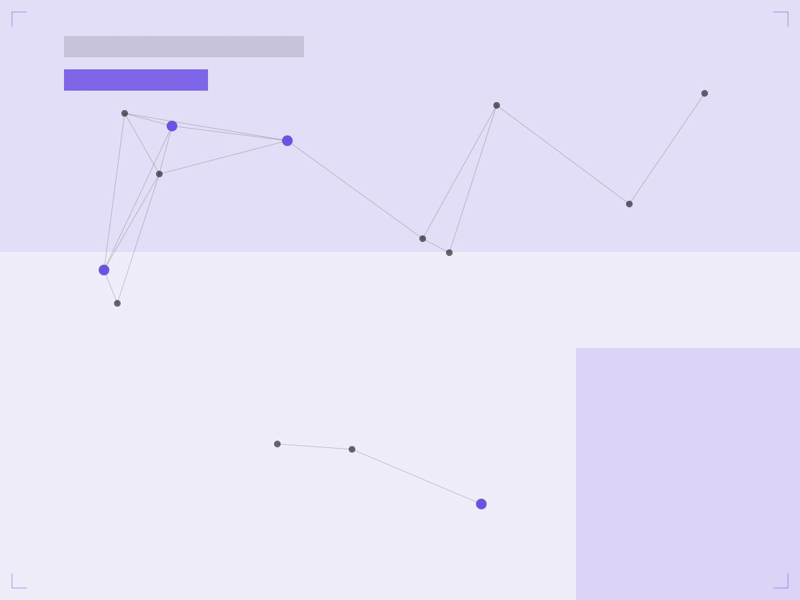

2024 — 现在
网站建站 / 视觉设计负责人
公司名称占位 · 全职
- 主导官网从 0 到 1 重构，建立 WordPress + Oxygen 模板体系，页面结构与样式全部模板化，改版不再推倒重来
- 搭建每日自动化内容发布流程，把选题查重、配图入库、SEO 字段写入全部串进一条流水线
- 完成全站 SEO 规范化：统一 URL 结构、Meta 体系与结构化数据
- 服务器资源受限条件下完成性能优化，页面加载与后台响应明显改善
做过什么，以及做成了什么。下面是职责范围、关键动作，和可以被验证的结果。
作品板块，覆盖从设计到上线的完整链路
累计上线的页面与设计交付物
设计与建站的实战经验
已跑通的 AI 自动化工作流
公司名称占位 · 全职
公司名称占位 · 全职
公司名称占位 · 全职
自驱项目



从设计稿到线上页面，
中间不需要别人传话。
大部分团队的问题是：设计、前端、运营、投放分成四拨人，信息在交接里损耗。 我的价值在于把这条链路一个人跑通——说得清结构，画得出视觉，做得出页面，还配得好 SEO。